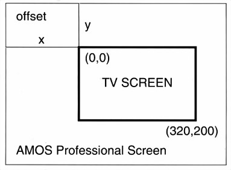

This Chapter explains how AMOS Professional screens are created and made ready to display the wonders of text, graphics and special effects.
Think of your television set or monitor as a glass window, through which you can view whatever AMOS Professional displays on its own "screen". The screen used to show AMOS Professional images is not the same as your TV display, because an AMOS Professional screen can be changed in many different ways, while the glass window of the TV set remains firmly fixed!
So far in this User Guide, everything has been displayed on a single AMOS Professional screen that appears in the glass window of your TV set. As an aid to understanding the theory of different screens, and to see the theory put into practice, make sure that you use the ready-made HELP programs as you read through this Chapter.
The default screen
Whenever an AMOS Professional program is run, a screen area is automatically set up to display
the results of that program. This is known as the "default" screen, and it forms the standard
display area that is used for all normal drawing operations. The default screen is given the
identity number zero. The individual dots on the screen that make up the image are known as
"pixels", and screen zero is 320 pixels wide, 200 pixels high and it can display 16 different
colours.
Additional screens
Apart from the default screen, seven more screens can be set up and used for AMOS
Professional programs, and each of these new screens is given an identity number from 1 to 7.
When a new screen is set up, it has to be "opened", and when this is done, its individual width,
height, number of colours and pixel size is also defined.
Screen resolution
Although the default screen is 320 pixels wide, this "resolution" can be doubled to 640 pixels
across the screen. When the screen is 320 pixels wide it is in low resolution, or "Lowres", for
short. If this is changed to 640 pixels wide, the screen is in high resolution, known as "Hires".
instruction: open a new screen
Screen Open number,width,height,colours,pixel mode
To open a new screen give the SCREEN OPEN command, followed by these parameters:
Number is the identification number of the new screen, ranging from 0 to 7. If a screen with this number already exists, it will be completely replaced by this new screen.
Width sets up the numbest- of pixels that will make up the width of the new screen. There is no problem in opening a screen that is wider than the physical limit of the television or monitor display, and extra-wide screens can be manipulated by the SCREEN OFFSET command. The widest possible screen is 1024 pixels across, from zero to 1023.
Height holds the number of pixels that make up the height of the screen. Like the width parameter, this can be larger than the visible screen height to a maximum of 1023 pixels, and scrolled into view. Screens with oversized widths and heights can be used with all of the normal screen techniques which are explained later.
Colours sets the number of colours to be used for the new screen. The choice for this number is normally between 2,4,8,16 or 32. There are two special sorts of screens that can make use of 64 colours (Extra Half Bright mode screens), and 4096 colours (Hold And Modify mode screens), and these modes are explained at the end of this Chapter.
Pixel mode is a choice of the width of the pixel points on the screen. Lowres is the normal status, allowing 320 pixels to be displayed across the screen, at any one time. Hires halves the width of each pixel, and so allows 640 to be displayed.
function: set screen mode to 320 pixels wide
Screen Open number,width,height,colours,Lowres
function: set screen mode to 640 pixels wide
Screen Open number,width,height,colours,Hires
When the default screen is automatically opened, screen 0 is the equivalent to the following setting:
Screen Open 0,320,200,16,Lowres
To open screen number 1 as an oversize high-resolution screen with eight colours, you would use something like this:
Screen Open 1,600,400,8,Hires
This routine opens all eight available screens and brings them into view:
Curs Off : Cls 13: Paper 13
Print : Centre "Hello, I'm SCREEN 0"
For S=1 To 7
Screen Open S,320,20,16,Lowres
Curs Off : Cls S+2 : Paper S+2
Centre "And I am SCREEN"+Str$(S)
Screen Display S,,50+S*25,,8
Next S
Here is a table which lists the different screen options, along with an indication of the amount of memory a standard size screen will consume.
Colours Resolution Memory Notes 2 320x200 8k PAPER=0 PEN=1 no FLASH Cursor=1 2 640x200 16k as above 4 320x200 16k PAPER=1 PEN=2 FLASH=3 Cursor=3 4 640x200 32k as above 8 320x200 24k PAPER=1 PEN=2 FLASH=3 Cursor=3 8 640x200 48k as above 16 320x200 32k default setting 16 640x200 64k 32 320x200 40k 64 320x200 48k Extra Half Bright mode 4096 320x200 48k Hold And Modify mode
instruction: erase a screen
Screen Close number
Use the SCREEN CLOSE command to erase a screen and free the memory it was using for other programming needs. Simply specify the screen number to be deleted.
instruction: re-set to the default screen
Default
The DEFAULT instruction closes all currently opened screens and restores the display back to the original default setting.
AUTO VIEW ON
AUTO VIEW OFF
instructions: toggle viewing mode on and off
Auto View On
Auto View Off
When SCREEN OPEN is used to create a new screen, the screen is usually displayed at once. This may be inconvenient during the initialisation stages of a program, in which case the AUTO VIEW OFF command can be used to disable this automatic display system. Screens can then be updated at a convenient point, using the VIEW instruction. To re-activate the automatic screen updating system, use the AUTO VIEW ON command.
instruction: display current screen setting
View
When the AUTO VIEW OFF instruction is engaged, VIEW can be used to display any changes that have been made to the current screen settings, and they will be displayed at the next vertical blank period following the VIEW command.
Once a screen has been opened, it can be positioned and moved anywhere on the television display. This means that screens can be made to bounce, slip, slide, flip over, sink out of sight and behave in all sorts of bizarre ways. This also means that screens can overlap or be displayed above one another, and so several different screen modes can be shown at once in separate areas of the display.
instruction: position a screen
Screen Display number
Screen Display number,x,y, width,height
To position a screen, the SCREEN DISPLAY command is used, followed by these parameters:
Number refers to the number of the screen to be displayed, from 0 to 7. All or any of the other parameters can be omitted, but the relevant commas must be included.
The x,y-coordinates are given as "hardware" coordinates, which refer to physical positions on the television screen, not the area used by AMOS Professional screens. These set the position from which your AMOS Professional screen will be displayed on the TV screen.
X coordinates can range from 0 to 448, and they are automatically rounded down to the nearest 16-pixel boundary. Only the positions from 112 to 432 are actually visible on the TV screen, so avoid using an x-coordinate below 112.
Y coordinates can range between 0 and 312, but because every TV set displays a slightly different visible area, it is sensible to keep the range between 30 and 300. A small amount of experimenting will reveal what suits your own system.
Width sets the width of the screen in pixels. If this is different from the original setting, only a part of the image will be shown, starting from the top left-hand corner of the screen. It will also be rounded down to the nearest 16 pixels.
Height is used to set the height of the screen in exactly the same way as the width.
If any of the optional parameters are left out, the default settings will be applied automatically.
For example, to display screen zero, keeping its original width and height, this line could be used:
Screen Display 0,112,40,,
Only one screen at a time can be shown on each horizontal line of the display, but several screens can be placed on top of one another. If screens are placed next to each other, in other words if they are sewn together to make a continuous display, there is one line of pixels where the screens meet that becomes "dead". This effect can be seen by moving the mouse pointer between the Direct mode window and the Default Screen, where a line of "dead" pixels occurs.
One way of getting over this dead zone is to create an extra-large screen that is bigger than the TV display, and then move the visible area around inside its boundaries. When using extra-large screens, the area to be viewed is set with the SCREEN OFFSET command.
instruction: offset screen at hardware coordinates
Screen Offset number,x,y
Look at the diagram below, where the area of the visible screen is shown as a sort of "port-hole" 320 pixels wide by 200 pixels high, inside a larger AMOS Professional screen. Of course, the port- hole can be made smaller using the SCREEN DISPLAY command.
The SCREEN OFFSET command is followed by the number of the screen to be displayed, then the x,y-coordinates of the "offset", which is the point where the top left-hand corner of the visible display is to start, measured from the top left-hand corner of the extra-large screen.
The visible area can be Moved around the extra-large screen by changing the offset coordinates, and some very smooth scrolling effects are achieved. These can be used for background graphics in computer games, as well as more serious applications like route finders or star constellations.
instruction: clone a screen
Screen Clone number
To create an identical copy of the current screen, and assign this new "clone" with a new screen number, use the SCREEN CLONE command followed by the destination screen number. Here is an example of a multi-cloned screen:
Screen Open 0,320,20,4,Lowres
Flash Off
Screen Display 0,,70,,
For S=1 To 7
Screen Clone S
Screen Display S,,S*20+70,,
Next S
Print "Start typing";
Do
AS=Inkey$
If A$<>"" Then Print A$;
Loop
Screen cloning is an ideal technique for two-player computer games, with each player controlling half of the visible display area.
The clone uses the same memory area as the original screen, and will be displayed at the same place as the original. Any of the usual screen operations can be used with the clone, such as SCREEN DISPLAY and SCREEN OFFSET. However, because there is only one copy of the original screen data in memory, it is impossible to use the SCREEN command with the cloned copy.
instruction: combine two screens
Dual Playfield first screen,second screen
The DUAL PLAYFIELD mode is the equivalent of mixing together two images from separate video cameras, and is achieved by displaying two screens simultaneously at the same x,y- coordinates. Each of the two screens can be manipulated completely independently from one other, and this can be exploited to produce very smooth parallax scrolling. Because the sizes of the two screens can be different, a smaller screen can be scrolled against a larger background screen, creating the parallax effect.
The two components of this dual playfield are treated as any other AMOS Professional screen, and they can even be double buffered or animated with AMAL.
To create a dual playfield screen, simply give the command, followed by the two numbers of the relevant screens, which have already been defined using SCREEN OPEN. Both screens must have the same resolution, and there are some restrictions on the number of colours allowed. Here is a table of the possibilities:
1st Screen 2nd Screen Resolution of both screens 2 colours 2 colours Lowres or Hires 4 colours 2 colours Lowres or Hires 4 colours 4 colours Lowres or Hires 8 colours 4 colours Lowres only 8 colours 8 colours Lowres only
The colours of these screens are taken from the palette of the first screen with colour zero being IF treated as transparent. The first screen makes use of colours zero to 7, while the second screen uses 8 to 15. When you are drawing to the second screen, AMOS Professional will automatically convert the colour index to the appropriate number before using it. This means that colours zero to 7 of the second screen's palette will use colours 8 to 15 of the first screen's palette, in ascending order.
Always make the first screen the current screen when changing the colour settings.
Remember that the automatic conversion process does not apply to assignment statements such as COLOUR or PALETTE.
When using SCREEN OFFSET to position a dual playfield screen, always specify the first screen, and never set screen offsets for both dual playfield screens to zero.
instruction: reverse order of dual playfield screens
Dual Priority first screen, second screen
Normally, the first screen of a dual playfield is displayed directly over the second screen. To reverse this order, so that the second screen appears in front of the first, use the DUAL PRIORITY command. Please note that this instruction only changes the order of display, and has no effect on the screen organisation at all, so the first screen in the parameter list is still used for all colour assignments, and with the SCREEN DISPLAY command.
instruction: clear current screen
Cls
Cls colour number
Cls colour number,x1,y1 To x2,y2
The CLS command erases.all or part of the current screen. Used on its own, the contents of the current screen are deleted and replaced by the current paper colour. Any windows that may have been set up will also be cleared in this way.
By specifying the index number of a particular colour after the CLS command, the clearing operation will be carried out using that colour.
A rectangular part of the current screen can also be cleared, leaving the rest of the screen intact. This is achieved by adding the coordinates of the block to be filed with the specified colour, from the top left-hand corner, to the bottom right. For example:
Cls: Circle 100,98,98: Cls 0,50,50 To 150,150
instruction: hide a screen
Screen Hide
Screen Hide number
instruction: show a screen
Screen Show
Screen Show number
Use the SCREEN HIDE command to remove the current screen from view. It can then be restored using a SCREEN SHOW instruction, like this:
Cls : Print "I am the Current Screen" : Wait 100
Screen Hide : Wait Key
Screen Show
Any screen can be temporarily hidden, by including its index number after the SCREEN HIDE instruction. This screen is revealed with a similar request to SCREEN SHOW, followed by the relevant screen number.
Because screens may be of different sizes, and because they can be displayed at various positioned on the TV by offsets and overlaps, and because there can be up to eight electronic screens queuing up one behind the other, a method is needed to bring any one of these screens to the front of the display.
instruction: move screen to front of display
Screen To Front
Screen To Front number
Use SCREEN TO FRONT to move the selected screen to the front of the display queue. If the screen number is omitted after the command, then the current screen will be brought to the front.
instruction: move screen to back of display
Screen To Back
Screen To Back number
This command is used to move a screen to the background of the display. If another screen is already there, it will be displayed in front of the chosen screen. Again, if the screen number is omitted after a SCREEN TO BACK command, the current screen will be relegated to the back of the display queue. Try this example:
Centre "Hello again, Screen 0 here"
Wait 100
Screen Open 1,320,200,2,Lowres
Centre "Excuse me, make way for Screen 1"
Wait 100 : Screen To Front 0
Screen 0
Wait 100 : Screen To Back
instruction: set current screen
Screen number
This command allows all graphical and text operations to be directed to the selected screen number, like this:
Screen Open 2,320,32,16,Lowres
Screen Display 2,,130,,
Screen 0
Plot 0,0: Draw To 320,200
If the chosen screen is outside of the current display area or is hidden, there will be no visible effect. However, any graphics will be drawn in memory, waiting to be displayed whenever this screen comes into view, or out of hiding after a Screen Show command.
instruction: define standard palette
Default Palette $1,$2,$3 ... $32
It is often necessary to open several screens using the same palette. To simplify this process, the DEFAULT PALETTE instruction is used to define a standard palette which will be used by all subsequent screens created by the SCREEN OPEN command. Colours are set using the $RGB values that are fully explained in the COLOUR section of Chapter 6.4. Up to 32 colours may be defined, depending on the screen mode, and any colours that are not re-set must have their appropriate commas in place. Here is an example line for eight colour screens:
Default Palette $000,$111,$A69,,,,,$FFF
instruction: copy palette from a screen
Get Palette number
Get Palette number,mask
This command copies the colours from a specified screen, and loads them into the current screen. This is useful when data is being moved from one screen to another with a SCREEN COPY command, and the same colour settings need to be shared for both screens. An optional mask can be added after the screen number, allowing only selected colours to be loaded. This works in exactly the same way as a mask for a GET SPRITE PALETTE command, and is explained in Chapter 7.1.
AMOS Professional provides a full range of screen functions, to monitor and exploit the current status of your screens.
function: give current screen number
screen number=Screen
SCREEN can be used as a function to return the number of the screen which is currently active. This screen is used for all drawing operations, but it is not necessarily visible.
function: give current screen height
height=Screen Height
height=Screen Height number
function: give current screen width
height=Screen Width
height=Screen Width (number)
This pair of functions is used to return the height and the width of the current screen or a particular screen, if that screen number is specified. The dimensions of the current screen can be found like this:
Print Screen Height
Print Screen Width
function: give maximum number of colours
number=Screen Colour
To find the maximum number of colours in the screen that is currently active, test the SCREEN COLOUR function now:
Print Screen Colour
function: give screen number at hardware coordinates
number=SCIN(x,y)
The SCIN function (short for SCreen In) is normally used with X MOUSE and Y MOUSE to check whether the mouse cursor has entered a particular screen. It returns the number of the screen which is underneath the selected hardware coordinates. If there is no screen there, a negative number will be returned.
IFF stands for Interchangeable File Format, commonly used to pass data between computers. IFF pictures from Dpaint are a classic example. As well as importing your own IFF drawings, AMOS Professional allows you to make use of legally available, ready-made pictures in the public domain, for your own programs.
instruction: load an IFF screen from disc
Load Iff "filename"
Load Iff "filename",screen number
With the appropriate IFF picture files ready to be loaded on disc, this command is used to load the selected filename to the current screen. There is an optional screen number parameter, which will open that screen for the picture. If this numbered screen already exists, its contents will be erased and replaced by the IFF data.
instruction: save an IFF screen to disc
Save Iff "filename"
Save Iff "filename"
Save Iff "filename",compression mode
The SAVE IFF command saves the current screen as an IFF picture file with the selected filename onto disc. Certain data is automatically added to this IFF file, which stores the present screen settings, including any SCREEN DISPLAY, SCREEN OFFSET, SCREEN HIDE and SCREEN SHOW. This will be stored and recognised by AMOS Professional whenever this file is loaded again, so that the IFF screen will be displayed exactly as it was saved. Please note that this data will be ignored by other graphics packages, such as Dpaint 3, also that it is not possible to save double buffered or dual playfield screens with this command.
An optional parameter can be added after the filename, which selects whether or not the IFF file is to be compacted before it is saved. A value of 1 specifies that the standard AMOS Professional compression system is to be used, whereas a zero saves the picture without any compression.
The colour of every point on the screen is governed by a value held in one of the Amiga's colour registers. Each register can be loaded from a selection of 4096 different colours.
There is no point in wasting the computer's memory with dozens of available colours, if only two of them are going to be employed for some simple text. On the other hand, there is no point being restricted to 16 or 32 colours if images need to be as realistic as possible. There are two special screen modes that change the number of colours for use, Extra Half Bright mode (EHB), and Hold And Modify mode (HAM).
Extra Half Bright mode doubles the number of available colours to 64. This is achieved by creating two colours from each of the Amiga's 32 colour registers. Colour numbers 0 to 31 are loaded straight from one of the colour registers, as normal. But the EHB mode creates an extra set of colours alongside the originals, by looking at their values and dividing them in half. This makes the new set of colours exactly half as bright as the originals. The new set of colours uses index numbers from 32 to 63.
Obviously, you can take full advantage of EHB by loading the 32 colour registers with the brightest colours available, so that pastel shades are generated automatically. Alternatively, if you needed to create specialised graphics, like an old-fashioned photograph for example, you might want to restrict the 32 colour registers to reds, greys and browns.
Using EHB mode makes no difference at all to any other parts of your programming, and EHB screens are treated in exactly the same way as the default screen. It is also possible to create Bobs in this mode. Here is a simple example of EHB colours.
Screen Close 0
Screen Open 2,320,167,64,Lowres : Flash Off
For C=1 To 32
Ink C
Bar 0,(C-1)*5 To 160,(2+C-1)*5
Ink C+32
Bar 160,(C-1)*5 To 319,(2+C-1)*5
Next C
For an artist to carry around 4096 tubes of different coloured paint would be expensive and stupid, so an artist makes use of common colours, and mixes them together to create the exact shade needed. Computers use exactly the same process, allowing the programmer to hold on to an existing colour and modify it very slightly, time and time again. This is the theory behind the Amiga's Hold And Modify (HAM) mode.
HAM mode splits up colour values into four separate groups. Colours 0 to 15 are normal, and the others exploit the way that all colours are made up from basic Red, Green and Blue components.It must be stated that HAM mode is difficult to use, but AMOS Professional is able to exploit its full potential. This is valuable for displaying digitised colour pictures, either grabbed from video images or created using special packages such as Dpaint 4. To open a HAM screen ready to display all 4096 available colours, the following line could be used:
Screen Open 0,320,256,4096,Lowres
All text and graphics operations may be used directly with a HAM screen, and it can be manipulated by the normal SCREEN DISPLAY and SCREEN OFFSET commands.
Do set the first point of each horizontal line to a colour numbered from 0 to 15, which will serve as the starting colour for all shades on the current line. To prevent unwanted fringe colours when SCREEN COPY is used, see that the screen's border zone also uses a colour from 0 to 15. This ensures that HAM screens are re-drawn at a new position using their original colours.
Do not try to scroll a HAM screen horizontally, unless you wish to see fringes of spurious colour at the side of the picture. This problem does not occur with vertical scrolls.
Interlaced mode is perfect for displaying pictures, but is not recommended for much else.
reserved variable: return a value in conjunction with screen resolution
Screen Open number,width,height,colours,Laced+resolution
Screen Open 0,320,200,16,Laced+Lowres
Interlaced screens have double the number of vertical lines, which is excellent for graphic displays. Unfortunately they take twice as long to update, which is no good at all for fast-action games! Interlaced screens will only give flicker-free results if a "multi-sync" monitor is being used. Also certain TV sets and monitors do not take kindly to excessive switching between interlaced and normal screens.
All of the usual operations may be used with interlaced screens, such as SCREEN DISPLAY, SCREEN OFFSET, and so on, but for technical reasons interlacing is not allowed during copper list calculations. As soon as the last interlaced screen has been closed, the entire display returns to normal mode.
function: return screen mode
value=Screen Mode
This simple function is used to report the mode of the current screen. If the screen is LACED, 4 or $8004 will be returned. If the screen is LOWRES, a value of $0 is given. For a HIRES screen, $8000 will be returned.